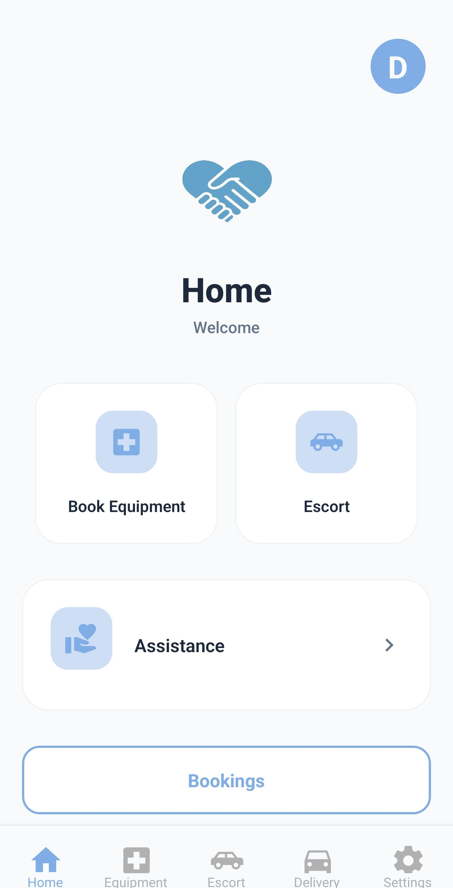

TwinXCare app
Home
Care dashboard
Healthcare made simpler across every screen size.
Browse equipment, review escort activity, and keep track of rental history with the same soft visual language as the mobile app.

History
Recent activity
Discover
Explore equipment and services
Live data from the same collections used by the app.
0 equipment available
Care dashboard
Escort requests and volunteer slots
Monitor the status of your escort requests.
Patient requests
Your escort requests
Volunteer slots
Your availabilities
Tracker
Delivery and booking timeline
Latest activity first, with expandable details for each record.
Timeline
Rental history
Preferences
Appearance and accessibility
Theme presets, language, text size, and developer color tokens.
Accessibility
Presets
Core settings
Preferences
Advanced
Design tokens
These controls mirror the developer theme overrides from the app settings screen and save locally. If you are signed in, the selected theme also syncs back to your user document.